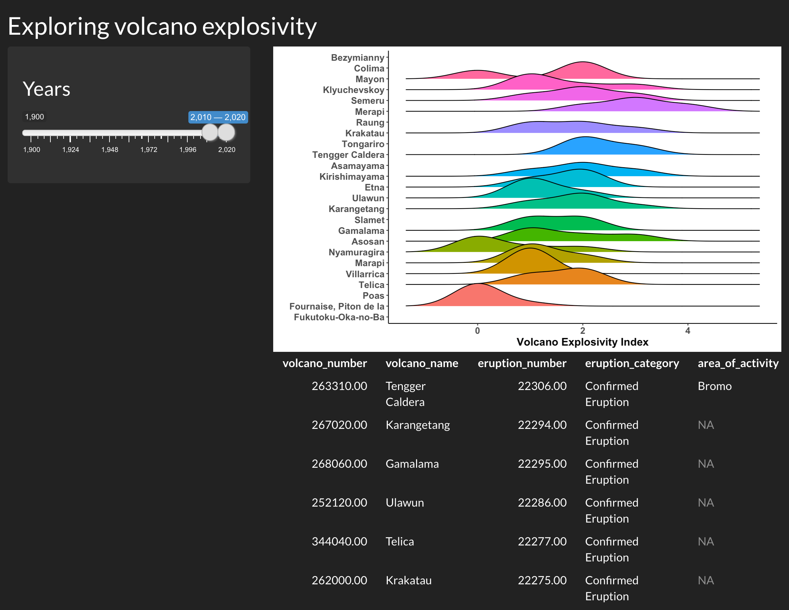

# load packages
library(shiny)
library(ggridges)
library(ggplot2)
library(here)
library(readr)Plots
Shiny is an excellent tool for visual exploration - it is at its most useful when a user can see something change before their eyes according to some selections. This is a great way to allow users to explore a dataset, explore the results of some analyses according to different parameters, and so on!
Let’s now add a plot to our Shiny app, to visualize the distribution of a variable depending on user input. We’ll be adding the ggplot2 and ggridges packages in the set-up step at the top of our app.R to allow us to make a plot.
User interface
To add a plot in our Shiny, we need to indicate where the plot should appear in the app. We can do this with plotOutput(), a similar function to tableOutput() in the previous section that is meant for plot outputs, as the name suggests.
# Define UI for application that makes a table andplots the Volcano Explosivity
# Index for the most eruptive volcanoes within a selected range of years
ui <- fluidPage(
# Application title ----
titlePanel("Exploring volcano explosivity"),
# Input interface ----
sidebarLayout(
sidebarPanel(
# Sidebar with a slider range input
sliderInput("years", # the id your server needs to use the selected value
label = h3("Years"),
min = 1900, max = 2020, # maximum range that can be selected
value = c(2010, 2020) # this is the default slider position
)
)
),
# Show the outputs from the server ---------------
mainPanel(
# Show a ridgeplot of explosivity index for selected volcanoes
plotOutput("ridgePlot"),
# then, show the table we made in the previous step
tableOutput("erupt_table")
)
)Now our Shiny app knows where we want to place our plot.
Server
We now need to create the plot we want to show in our app. This plot will change depending on one or several reactive values that the user can input or select in our UI.
We link the UI and server together with IDs that are assigned to each object. Above, we told the UI to expect a plot output with the ID "ridgePlot". In the server, we will create a plot and render it as a plot object using renderPlot(), and we will assign this plot output to the ID we call in the UI (as output$ridgePlot).
# Define server logic required to make your output(s)
server <- function(input, output) {
# prepare the data
# ----------------------------------------------------------
# read the dataset
eruptions <- readr::read_rds(here::here("data", "eruptions.rds"))
# filter the dataset to avoid overloading the plot
eruptions <- eruptions[which(eruptions$volcano_name %in% names(which(table(eruptions$volcano_name) > 30))),]
# this subsets to volcanoes that have erupted more than 30 times
# make reactive dataset
# ----------------------------------------------------------
# subset volcano data with input year range
eruptions_filtered <- reactive({
subset(eruptions, start_year >= input$years[1] & end_year <= input$years[2])
})
# create and render the outputs
# ----------------------------------------------------------
# create the table of volcanoes
output$erupt_table <- renderTable({
head(eruptions_filtered())
})
# render the plot output
output$ridgePlot <- renderPlot({
# create the plot
ggplot(data = eruptions_filtered(),
aes(x = vei,
y = volcano_name,
fill = volcano_name)) +
# we are using a ridgeplot geom here, from the ggridges package
geom_density_ridges( size = .5) + # line width
# label the axes
labs(x = "Volcano Explosivity Index", y = "") +
# adjust the ggplot theme to make the plot "prettier"
theme_classic() +
theme(legend.position = "none",
axis.text = element_text(size = 12, face = "bold"),
axis.title = element_text(size = 14, face = "bold"))
})
}The Shiny app
Now, if we run the Shiny app, we have a plot above the table we made previously. They are positioned in this way because the plotOutput() comes before the tableOutput() in the UI.
# Run the application
shinyApp(ui = ui, server = server)
Review: How a Shiny app works
Building blocks
We’ve now seen the basic building blocks of a Shiny app:
- The user interface, which determines how the app “looks”. This is how we tell Shiny where to ask for user inputs, and where to put any outputs we create.
- Reactive values, which are values that change according to user inputs. These are values that affect the outputs we create in the Shiny app, such as tables or plots.
- The server, where we use reactive values to generate some outputs.
IDs
The user interface and server communicate through IDs that we assign to inputs from the user and outputs from the server.

We use an ID (in orange) to link the user input in the UI to the reactive values used in the server:

We use another ID (in blue) to link the output created in the server to the output shown in the user interface:

Organisation
These elements can all be placed in one script named app.R or separately in scripts named ui.R and server.R. The choice is up to you, although it becomes easier to work in separate ui.R and server.R scripts when the Shiny app becomes more complex.
Example 1: Everything in app.R
 Example 2: Split things into
Example 2: Split things into ui.R and server.R

Customising the theme
If you’d like to go one step further, you can also customize the appearance of your Shiny app using built-in themes, or creating your own themes.
Using built-in themes
There are several built-in themes in Shiny, which allow you to quickly change the appearance of your app. You can browse a gallery of available themes here here, or test themes out interactively here.
Let’s try the darkly theme on our Shiny app. To do this, we will need the shinythemes package.
library(shinythemes)We can change the theme of our previous app with one line of code:
# Define UI for application that makes a table andplots the Volcano Explosivity
# Index for the most eruptive volcanoes within a selected range of years
ui <- fluidPage(
# Application title ----
titlePanel("Exploring volcano explosivity"),
# Input interface ----
sidebarLayout(
sidebarPanel(
# Sidebar with a slider range input
sliderInput("years", # the id your server needs to use the selected value
label = h3("Years"),
min = 1900, max = 2020, # maximum range that can be selected
value = c(2010, 2020) # this is the default slider position
)
)
),
# Show the outputs from the server ---------------
mainPanel(
# Show a ridgeplot of explosivity index for selected volcanoes
plotOutput("ridgePlot"),
# then, show the table we made in the previous step
tableOutput("erupt_table")
),
# Customize the theme ----------------------
# Use the darkly theme
theme = shinythemes::shinytheme("darkly")
)Now, if we run the app, it looks a little different:

Using a custom theme
You can also go beyond the built-in themes, and create your own custom theme with the fonts and colours of your choice. You can also apply this theme to the outputs rendered in the app, to bring all the visuals together for a more cohesive look.
Customizing a theme
To create a custom theme, we will be using the bs_theme() function from the bslib package.
library(bslib)# Create a custom theme
cute_theme <- bslib::bs_theme(
bg = "#36393B", # background colour
fg = "#FFD166", # most of the text on your app
primary = "#F26430", # buttons, ...
# you can also choose fonts
base_font = font_google("Open Sans"),
heading_font = font_google("Open Sans")
)To apply this theme to our Shiny app (and the outputs), we will be using the thematic package.
library(thematic)There are two essential steps to apply a custom theme to a Shiny app:
- Activating thematic.
- Setting the user interface’s theme to the custom theme (
cute_theme).
# Activate thematic
# so your R outputs will be changed to match up with your chosen styling
thematic::thematic_shiny()
# Define UI for application that makes a table andplots the Volcano Explosivity
# Index for the most eruptive volcanoes within a selected range of years
ui <- fluidPage(
# Application title ----
titlePanel("Exploring volcano explosivity"),
# Input interface ----
sidebarLayout(
sidebarPanel(
# Sidebar with a slider range input
sliderInput("years", # the id your server needs to use the selected value
label = h3("Years"),
min = 1900, max = 2020, # maximum range that can be selected
value = c(2010, 2020) # this is the default slider position
)
)
),
# Show the outputs from the server ---------------
mainPanel(
# Show a ridgeplot of explosivity index for selected volcanoes
plotOutput("ridgePlot"),
# then, show the table we made in the previous step
tableOutput("erupt_table")
),
# Customize the theme ----------------------
# Use our custom theme
theme = cute_theme
)Now, if we run the app, the user interface and plot theme is set to the colours and fonts we set in cute_theme:

Here, thematic is not changing the colours used to represent a variable in our plot, because this is an informative colour scale (unlike the colour of axis labels, lines, and the plot background). However, if we remove this colour variable in our ridgeplot in the server, thematic will change the plot colours as well. Here is a simplified example of our server to see what these changes would look like:
# Define server logic required to make your output(s)
server <- function(input, output) {
#... (all the good stuff we wrote above)
# render the plot output
output$ridgePlot <- renderPlot({
# create the plot
ggplot(data = eruptions_filtered(),
aes(x = vei,
y = volcano_name)) + # we are no longer setting
# the fill argument to a variable
# we are using a ridgeplot geom here, from the ggridges package
geom_density_ridges(size = .5) +
# label the axes
labs(x = "Volcano Explosivity Index", y = "") +
# remove the "classic" ggplot2 so it doesn't override thematic's changes
# theme_classic() +
theme(legend.position = "none",
axis.text = element_text(size = 12, face = "bold"),
axis.title = element_text(size = 14, face = "bold"))
})
}Now, our plot’s theme follows the app’s custom theme as well: